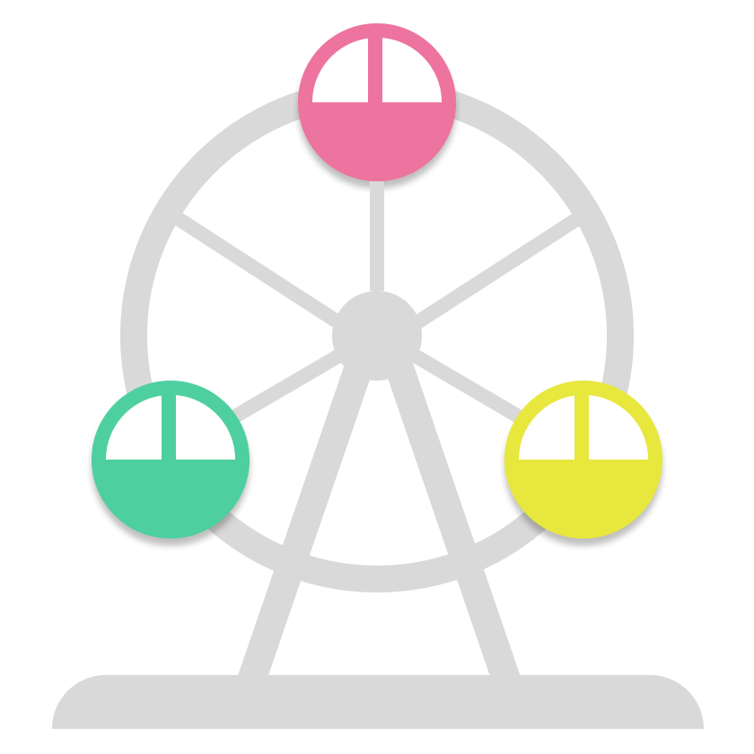
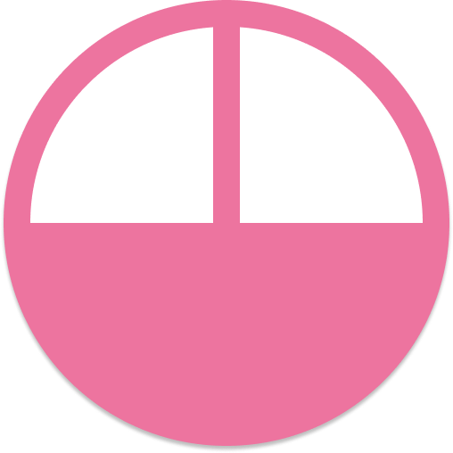
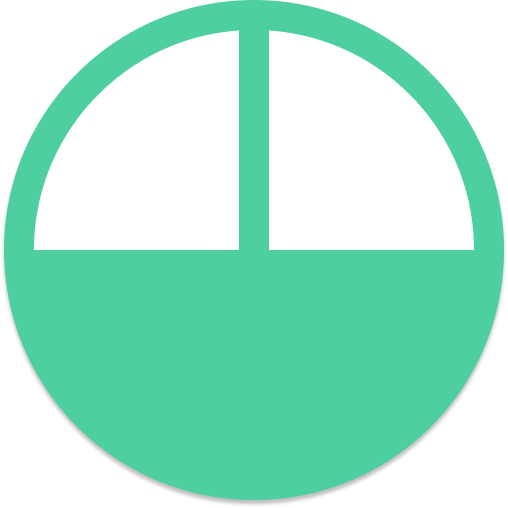
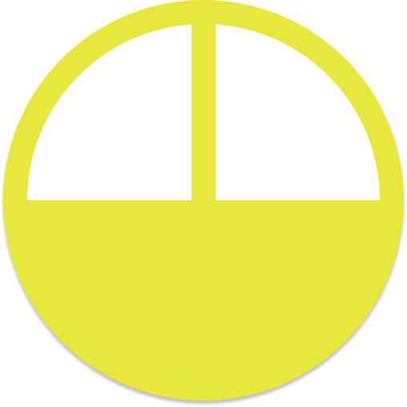
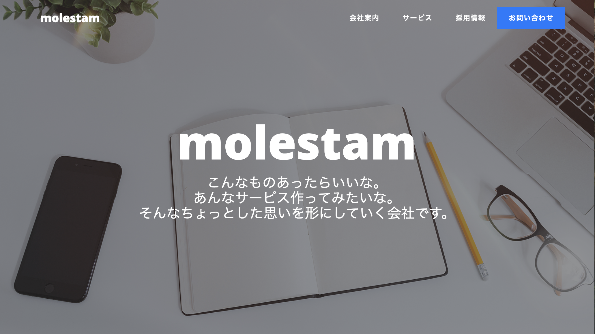
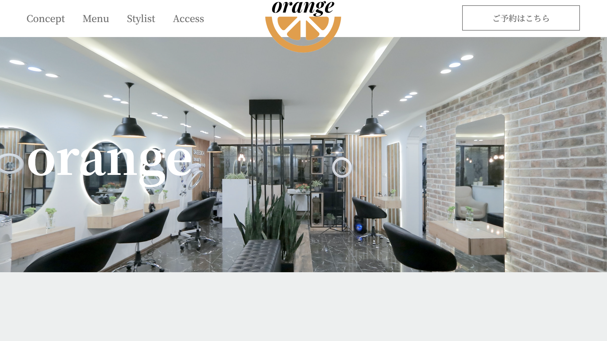
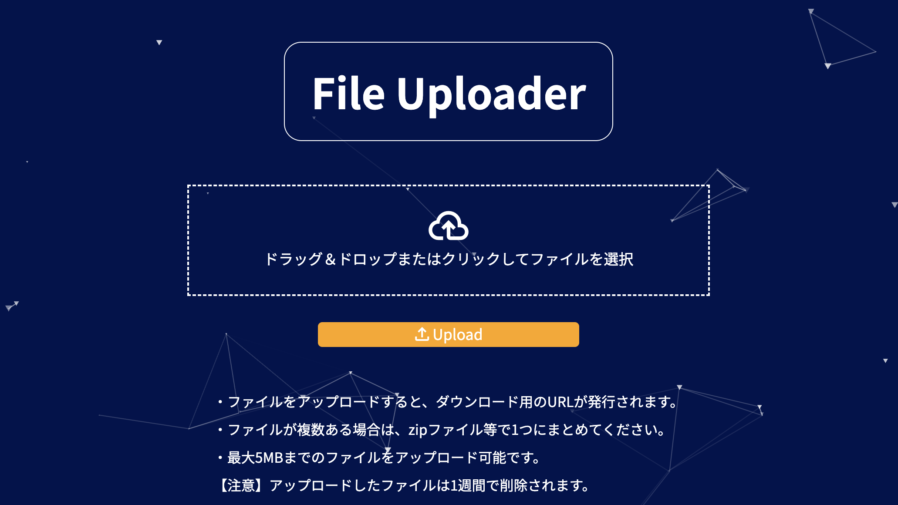
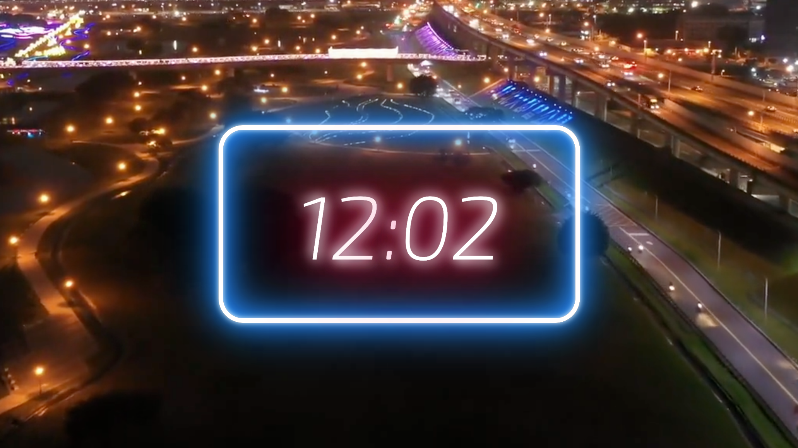

Bootstrapのテンプレートを使用して、企業風のHPを作成しました。細かい見た目の部分を自分で調整し、企業のイメージやサービスの内容なども自分で考えてみました。
※練習用に作成したサイトで、実在する企業ではありません。
使用言語
HTML/CSS, Bootstrap

Web Engineer



はじめまして。平成4年生まれの歳。Webエンジニア年目の中尾です。
大学を卒業後造船会社に入社し、5年半設計業務に従事しました。
その後、造船業界全体の先行きに不安を感じ、29歳で転職をしました。
現在はwebエンジニアとして業務を担当しております。
職業訓練校でHTML/CSS、プログラミングスクールでPHPを中心にweb技術を学びました。 現在の主な業務は、要求定義から社内のデザイナーやプログラマーへのディレクションです。 また、オフショアの開発会社への開発依頼及び検収作業も行っております。
社内向けのシステムなど、自身で開発をする機会もありますが、 社外向けや一般ユーザー向けの正式なサービスを自身で開発した経験がないため、 今後プライベートでもいいので、そのような経験を積んでいきたいと考えております。
0 - 今後習得したい技術
1 - 軽く触ったことがある、または学習中
2 - 数ヶ月以上使用しているがもう少し習熟が必要
3 - 実務で基本的な使用が可能
4 - 応用的な使い方やカスタマイズが可能
5 - プロフェッショナル

molstan
企業風ホームページ

orange
美容室風ホームページ

File Uploader
ファイルアップローダー

モニター時計
展示用モニター時計
| はじまり | 1992年 大分県の田舎町で生まれました。 |
|---|---|
| 学生時代 |
小学校：フットサル・野球・陸上とスポーツに夢中でした。 中学校：ソフトテニス部でキャプテンになり、チームで県ベスト4までいったのは良い思い出です。 高校：サッカー部で大学受験と両立しながら、高校生活を過ごしました。 大学：大分大学に入学し、機械工学を学びました。プライベートはパチンコに明け暮れていました。 |
| 社会人 | 造船会社に入社。仕事もそうですが、社会人としての基礎を築いていただきました。会社や先輩には今でも感謝しかありません。 |
| 転職 |
5年半勤めた造船会社を退社。 これまで仕事に対しては、自分のやりたいことや興味のあることというよりも、できる仕事ならなんでもいいという考え方でした。 しかし、30歳を目前にして自分の人生を見つめ直し、造船業界の先行きに不安を感じたという点もありますが、1度自分のやりたいことにチャレンジをしてみようと決意しました。 なぜITの仕事を選んだのかというと、大学時代に簡単なプログラミングの授業を受けたことや、社会人になってからもプライベートでゲームの攻略サイトを作ろうと思い、軽くHTMLに触れた経験がありました。 当時は意識していませんでしたが、振り返ってみると、もともとITに対して少し興味があったのだと思います。 最終的な決め手は、「ITってなんとなくかっこいいし、これからニーズも高まりそう」という、正直少し軽い気持ちからでしたが、それでも自分の気持ちに素直になってみようと考えました。 退職後は、独学で勉強をしながら、職業訓練とオンラインスクールに通ってプログラミングの勉強をしました。 |
| 現在 | 無事転職に成功し、現在はwebエンジニアとして業務を担当しております。 |